sns.boxplot()Understand data distributions through quartiles, five-number summaries, and John Tukey's 1.5 × IQR whisker rule without assuming a normal distribution.
Jab aap kisi numerical column ka distribution samajhne ki koshish karte hain, toh traditional statistics humein do metrics sikhata hai: Mean (μ) aur Standard Deviation (σ). Lekin real-world data science mein ek simple rule yaad rakhiye: Mean is an extreme-value magnet! Ek single billionaire pure neighborhood ki average income ko 100 guna distort kar sakta hai.
Maan lijiye ek startup mein 10 junior engineers kaam karte hain jinki monthly salary ≈ ₹40,000 hai. Ab company mein ek celebrity AI Architect join karta hai jiska compensation ₹25,00,000 per month hai! Agar HR report karegi: "Hamari company ka average salary ₹2,63,600 hai!", toh kya yeh sach batata hai junior engineers ki ground reality ka? Bilkul nahi! Mean complete distortion represent karta hai.
Isi problem ko solve karne ke liye 1977 mein legendary statistician John W. Tukey ne Box-and-Whisker Plot invent kiya tha. Box plot data ko summarize karne ke liye parametric statistics (mean/std) ke bajaye Non-Parametric Order Statistics (Ranked Quantiles) use karta hai.
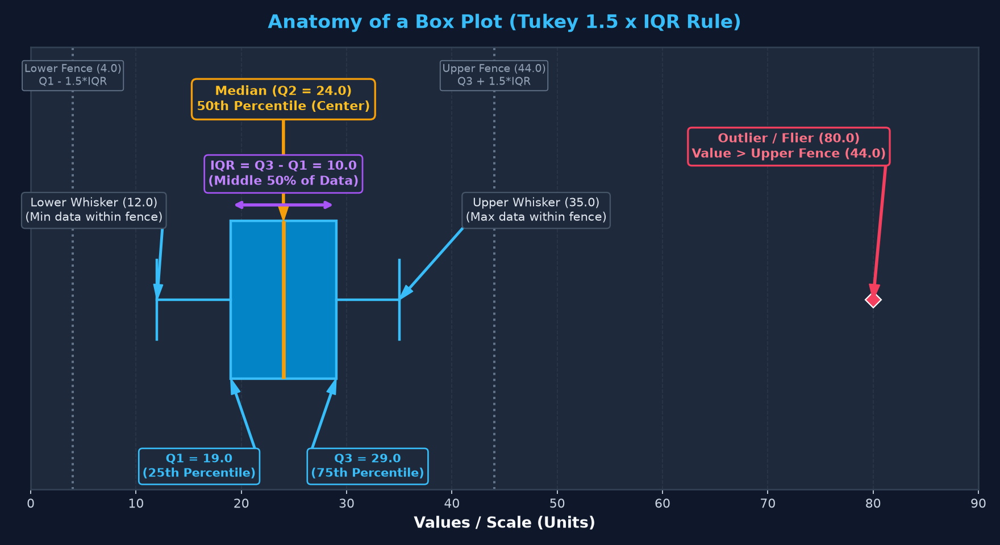
Aaiye code run karke dekhte hain ki jab dataset mein ek outlier enter karta hai toh Mean aur Median kaise behave karte hain:
import numpy as np
import pandas as pd
# 10 employees with normal salary + 1 executive outlier
clean_salaries = np.array([38000, 39000, 40000, 41000, 41500, 42000, 43000, 44000, 45000, 46000])
with_outlier = np.append(clean_salaries, [2500000])
print(f"Clean Data -> Mean: ₹{clean_salaries.mean():,.2f} | Median: ₹{np.median(clean_salaries):,.2f}")
print(f"With Outlier -> Mean: ₹{with_outlier.mean():,.2f} | Median: ₹{np.median(with_outlier):,.2f}")Notice the magic! Outlier add hote hi Mean ₹41,950 se jump karke ₹2,65,409 ho gaya (6.3× jump!), jabki Median sirf ₹41,750 se ₹42,000 hua (sirf ₹250 ka difference!). Box plots isiliye real-world analytics ka foundational pillar hain.
Box plot ka har ek graphic element kisi na kisi exact mathematical metric ko represent karta hai. Is mathematics ko bolte hain Five-Number Summary plus Tukey's Fences. Chaliye isko step-by-step calculate karte hain hamare foundational 11-number dataset ke saath:
Dataset ko pehle ascending order mein sort kiya jata hai. Kyunki n = 11 ek odd number hai, exact middle element position (n + 1) / 2 = 12 / 2 = 6th element hoga:
Dataset ko do equal halves mein divide kiya jata hai:
[12, 15, 18, 20, 22] → Median of lower half = 19.0 (Q1 / 25th percentile)[26, 28, 30, 35, 80] → Median of upper half = 29.0 (Q3 / 75th percentile)IQR represent karta hai aapke dataset ke middle 50% population ka spread. Box plot ka rectangular box precisely Q1 se Q3 tak faila hota hai, aur box ki length exact IQR hoti hai.
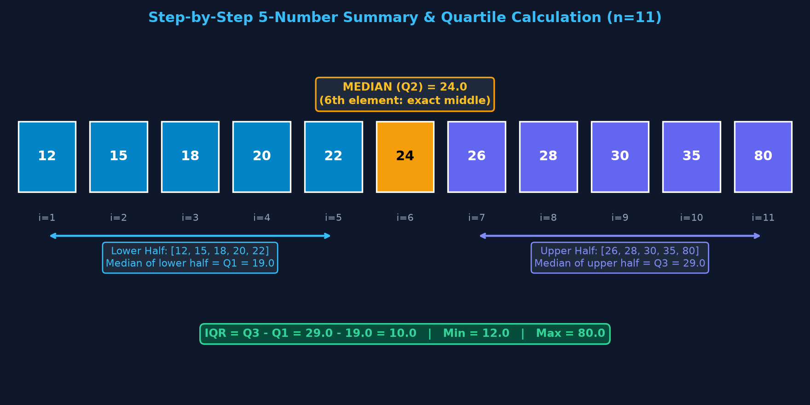
John Tukey ne outlier identify karne ke liye boundary lines define ki jinko Fences kaha jaata hai:
90% beginners yeh galat sochte hain ki whisker direct Upper Fence (44.0) tak extend hota hai! Yeh galat hai. Whisker kabhi theoretical fence tak draw nahi hota agar wahan data point hi na ho! Whisker fence ke andar ke sabse extreme actual observed data point par aakar ruk jaata hai!
Hamare dataset mein 44.0 se chhota sabse bada point 35.0 hai. Isiliye Upper Whisker 35.0 par rukega! Aur 80.0 kyunki fence (44.0) ke bahar chala gaya, isiliye usko whisker se alag karke ek standalone point (Flier) ke roop mein plot kiya jaata hai.
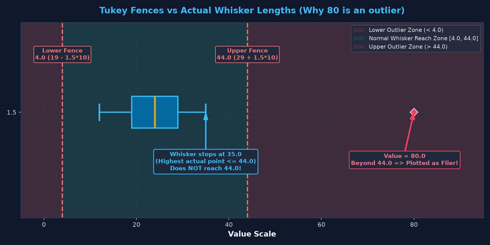
John Tukey ne 1.5 × IQR ko mathematically tune kiya tha. Normal distribution (Bell Curve) ke andar:
Ek standard Gaussian distribution mein ±2.7σ ke bahar sirf 0.7% data points aate hain (p ≈ 0.007). Agar Tukey 1.0 × IQR rakhte, toh normal distribution ke lagbhag 5% valid data points bina wajah outlier flag ho jaate (False Positives). Agar 2.0 × IQR rakhte, toh genuine anomalous outliers pakad mein nahi aate. 1.5 is the mathematically balanced sweet spot!
sns.boxplot() Syntax & Core ParametersSeaborn mein box plot generate karne ke liye standard function sns.boxplot() hota hai. Seaborn 0.13+ architecture mein yeh function categorical coordinates aur wide/long form data frames ko natively support karta hai.
sns.boxplot(data=None, *, x=None, y=None, hue=None, order=None, hue_order=None, orient=None, color=None, palette=None, saturation=0.75, fill=True, dodge='auto', width=0.8, gap=0, whis=1.5, formatter=None, linecolor='auto', linewidth=None, fliersize=None, hue_norm=None, native_scale=False, log_scale=None, boxprops=None, flierprops=None, medianprops=None, meanprops=None, whiskerprops=None, capprops=None, showmeans=False, showcaps=True, showbox=True, showfliers=True, **kwargs)
| Parameter | Type | Default | Data Science Purpose & Hinglish Explanation |
|---|---|---|---|
data |
DataFrame / Array | None |
Source dataset jisme se columns extract kiye jayenge (Tidy Long-form ya Wide-form). |
x, y |
str / Series | None |
Variable mappings. Agar categorical variable x par hai toh vertical plot banega; agar y par hai toh horizontal. |
hue |
str | None |
Sub-grouping variable jo har category ke box ko sub-segments mein split (dodge) karta hai. |
order, hue_order |
list | None |
Categories aur hue levels ki exact visual rendering sequence control karta hai. |
orient |
'v' | 'h' | 'x' | 'y' | None |
Explicit orientation. Default mein Seaborn data type detect karke auto-select karta hai. |
palette |
str / dict / list | None |
Color palette for boxes (e.g. 'Set2', ['#38bdf8', '#fbbf24']). |
width |
float | 0.8 |
Box body ki visual thickness (fraction of category bin space). |
gap |
float | 0 |
Seaborn 0.13+ feature: hue boxes ke beech ka spacing ratio (e.g. 0.1). |
whis |
float / tuple | 1.5 |
Whisker reach factor. Standard 1.5×IQR, ya conservative 3.0, ya percentile tuple (5, 95). |
showfliers |
bool | True |
Agar False ho, toh outlier marker glyphs hide ho jaate hain (whiskers unaffected). |
flierprops |
dict | None |
Outlier markers ke aesthetics (marker, markerfacecolor, markeredgecolor, markersize). |
medianprops |
dict | None |
Center median line ka color, linewidth aur styling dictionary. |
Aaiye student exam scores ka simple univariate box plot banate hain:
import matplotlib.pyplot as plt
import seaborn as sns
import pandas as pd
# Load verified college marks dataset
df = pd.read_csv("scratch/seaborn_topic7_data/college_exam_scores.csv")
fig, ax = plt.subplots(figsize=(7, 6))
sns.boxplot(y=df['exam_marks'], ax=ax, color='#0284c7', width=0.35,
boxprops=dict(edgecolor='#38bdf8', linewidth=1.8),
medianprops=dict(color='#f59e0b', linewidth=2.5),
flierprops=dict(marker='o', markerfacecolor='#f43f5e', markeredgecolor='#ffffff', markersize=6))
ax.set_ylabel("Exam Marks (Out of 100)", fontsize=11, fontweight='bold')
ax.set_title("Distribution of Student Exam Marks (n=180)", fontsize=13, fontweight='bold')
plt.tight_layout()
plt.show()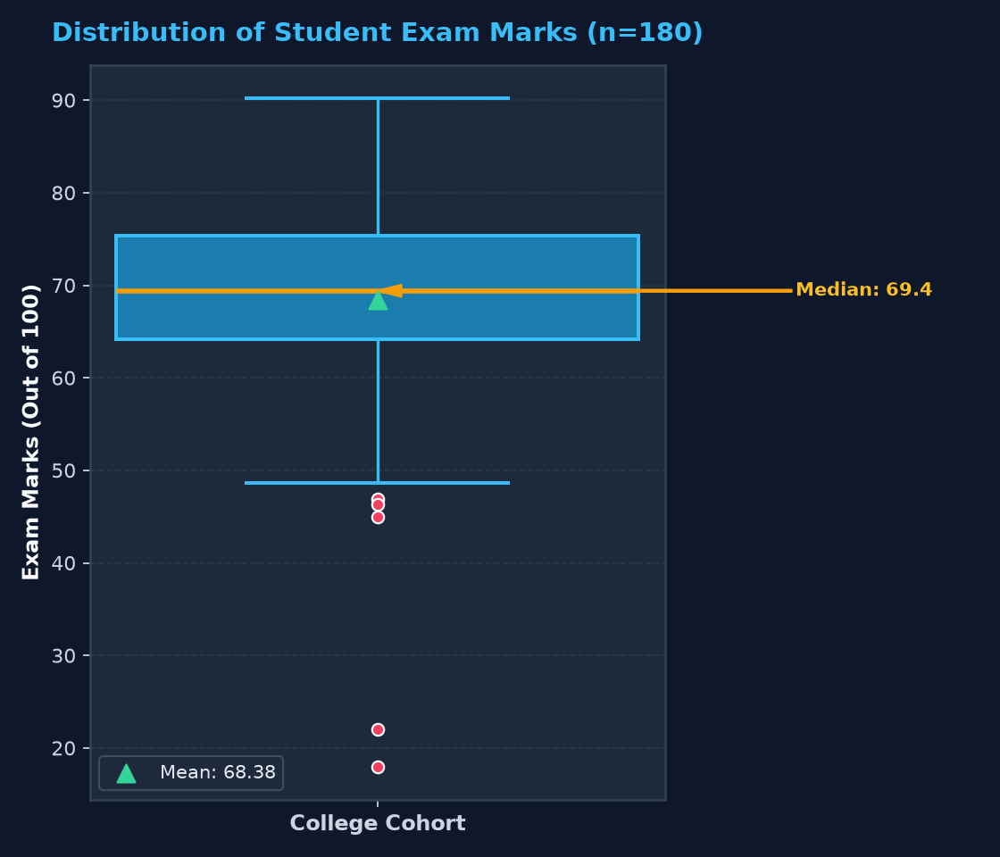
Jab koi stakeholder ya interviewer aapke saamne ek box plot rakhta hai, toh aapko usse ek story ki tarah padhna aana chahiye. Box plot ko read karne ka exact 4-step framework yeh hai:
Aaiye delivery time dataset ko ek horizontal box plot mein visualize karke 45-minute guaranteed customer SLA ke against evaluate karte hain:
import matplotlib.pyplot as plt
import seaborn as sns
import pandas as pd
df_deliv = pd.read_csv("scratch/seaborn_topic7_data/ecommerce_deliveries.csv")
fig, ax = plt.subplots(figsize=(10, 5))
sns.boxplot(x=df_deliv['delivery_time_mins'], ax=ax, color='#6366f1', width=0.4,
medianprops=dict(color='#fbbf24', linewidth=2.5),
flierprops=dict(marker='d', markerfacecolor='#f43f5e', markeredgecolor='#ffffff', markersize=7))
# Draw business SLA reference line
ax.axvline(45.0, color='#ef4444', linestyle='--', linewidth=2, label='45m Guaranteed SLA')
ax.set_xlabel("Delivery Time (minutes)", fontsize=11, fontweight='bold')
ax.set_title("E-Commerce Order Delivery Times (n=300)", fontsize=13, fontweight='bold')
ax.legend()
plt.tight_layout()
plt.show()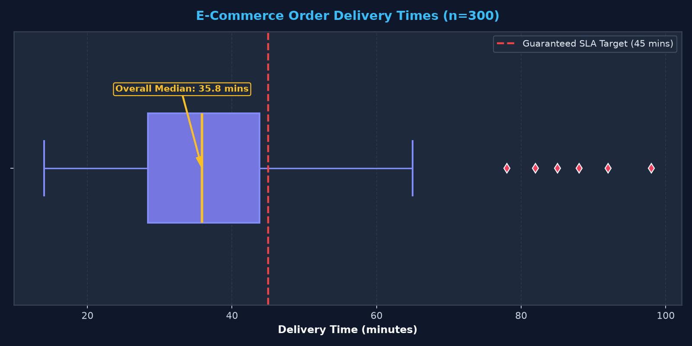
Jab aapke categorical groups ke naam lambe hote hain (jaise "Junior Data Analyst", "Senior Machine Learning Scientist", "Lead Site Reliability Engineer"), toh standard vertical box plot mein x-axis par label collision ho jaata hai. Labels aapas mein overlap ho jaate hain ya unhe 45° rotate karna padta hai jo padhne mein mushkil hota hai.
Seaborn mein horizontal plot banana bahut simple hai: bas numerical variable ko x par aur categorical variable ko y par pass kar dijiye!
import matplotlib.pyplot as plt
import seaborn as sns
import pandas as pd
df_salary = pd.read_csv("scratch/seaborn_topic7_data/tech_salaries_demo.csv")
fig, (ax1, ax2) = plt.subplots(1, 2, figsize=(13, 5.5))
# Vertical plot (requires x-tick rotation)
sns.boxplot(data=df_salary, x='role', y='monthly_salary_inr', hue='role', legend=False,
ax=ax1, palette=['#0284c7', '#6366f1', '#10b981'],
flierprops=dict(marker='o', markerfacecolor='#f43f5e', markeredgecolor='#ffffff', markersize=6))
ax1.set_xticklabels(ax1.get_xticklabels(), rotation=20, ha='right')
ax1.set_title("Vertical Box Plot (Rotated Labels)")
# Horizontal plot (effortless natural reading)
sns.boxplot(data=df_salary, y='role', x='monthly_salary_inr', hue='role', legend=False,
ax=ax2, palette=['#0284c7', '#6366f1', '#10b981'],
flierprops=dict(marker='o', markerfacecolor='#f43f5e', markeredgecolor='#ffffff', markersize=6))
ax2.set_title("Horizontal Box Plot (Effortless Reading)")
plt.tight_layout()
plt.show()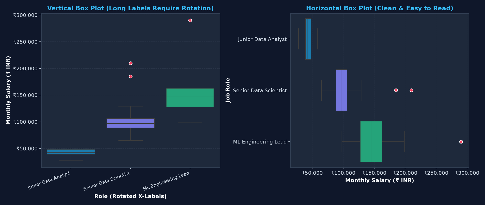
Jab aap multi-category box plot banate hain, toh unhe arbitrary order mein rakhne ke bajaye median ke according sort karna sabse powerful best practice hoti hai:
# Compute sorted order by median delivery time
sorted_partners = df_deliv.groupby('partner')['delivery_time_mins'].median().sort_values().index.tolist()
fig, ax = plt.subplots(figsize=(10, 5.5))
sns.boxplot(data=df_deliv, x='partner', y='delivery_time_mins', order=sorted_partners,
palette={'HyperRoute': '#10b981', 'QuickDrop': '#0284c7', 'SpeedyKart': '#f43f5e'},
ax=ax, width=0.45, medianprops=dict(color='#ffffff', linewidth=2.5))
ax.axhline(45, color='#fbbf24', linestyle='--', linewidth=1.8, label='SLA Limit (45 mins)')
ax.set_title("Partners Ranked by Median Speed (Fastest to Slowest)")
ax.legend()
plt.tight_layout()
plt.show()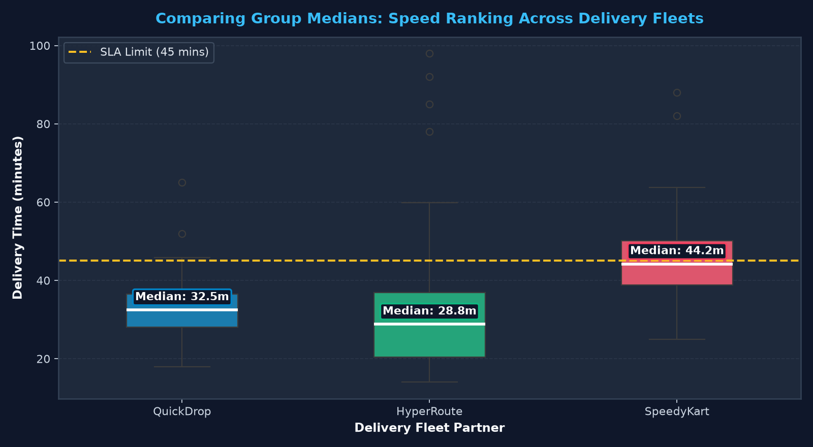
Aap standard Matplotlib box properties dictionaries pass kar sakte hain:
boxprops=dict(edgecolor='#38bdf8', linewidth=1.5, alpha=0.85) — Box border color aur transparency.whiskerprops=dict(color='#94a3b8', linewidth=1.5, linestyle='--') — Whiskers ko dashed ya custom color dena.capprops=dict(color='#94a3b8', linewidth=2.0) — Whisker caps ki thickness set karna.medianprops=dict(color='#fbbf24', linewidth=3.0) — Center median line ko prominent highlight karna.hueData science mein single-variable box plot se zyada valuable hota hai Multi-Category Segmentation. Jab aapko ek hi view mein multiple cohorts compare karne hote hain, toh Seaborn ka hue parameter game-changer ban jaata hai.
Pehle dekhte hain ki college sections (A, B, C) ke exam scores ka overall behavior kaisa hai:
import matplotlib.pyplot as plt
import seaborn as sns
import pandas as pd
df_college = pd.read_csv("scratch/seaborn_topic7_data/college_exam_scores.csv")
fig, ax = plt.subplots(figsize=(10, 5.5))
sec_palette = {'Section A': '#10b981', 'Section B': '#38bdf8', 'Section C': '#f59e0b'}
sns.boxplot(data=df_college, x='section', y='exam_marks', palette=sec_palette, ax=ax, width=0.45,
medianprops=dict(color='#ffffff', linewidth=2.5),
flierprops=dict(marker='o', markerfacecolor='#f43f5e', markeredgecolor='#ffffff', markersize=7))
ax.set_title("Performance Analysis Across College Sections (Variance & Outlier Profile)")
ax.set_xlabel("Academic Section")
ax.set_ylabel("Final Exam Marks")
plt.tight_layout()
plt.show()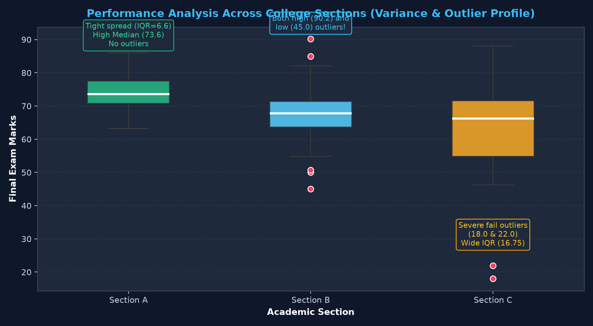
| Academic Section | Median Marks | IQR Spread | Min Whisker | Max Whisker | Identified Outliers | Pedagogical Takeaway |
|---|---|---|---|---|---|---|
| Section A | 73.6 | 6.62 | 63.2 | 86.1 | None (0) | Consistent high performers, disciplined study habits. |
| Section B | 67.75 | 7.72 | 54.8 | 82.1 | 45.0, 50.1, 50.7, 85.0, 90.2 |
High variance with both genius outliers and struggling students. |
| Section C | 66.25 | 16.75 | 46.3 | 88.1 | 18.0, 22.0 |
Wide inequality gap; severe bottom failure outliers need intervention. |
hueAb agar humein delivery partners ko unke Meal Slot (Lunch vs Dinner) ke basis par break karna ho, toh hue='meal_type' use karenge. Seaborn automatically side-by-side dodged boxes render kar deta hai:
df_deliv = pd.read_csv("scratch/seaborn_topic7_data/ecommerce_deliveries.csv")
fig, ax = plt.subplots(figsize=(11, 5.5))
sns.boxplot(data=df_deliv, x='partner', y='delivery_time_mins', hue='meal_type',
palette=['#38bdf8', '#fbbf24'], ax=ax, width=0.55, gap=0.08,
medianprops=dict(color='#ffffff', linewidth=2),
flierprops=dict(marker='d', markerfacecolor='#f43f5e', markeredgecolor='#ffffff', markersize=6))
ax.axhline(45, color='#ef4444', linestyle=':', linewidth=1.8, label='45m SLA Target')
ax.set_title("Delivery Time Breakdown by Fleet and Meal Slot (Using hue='meal_type')")
ax.legend(title='Meal Slot')
plt.tight_layout()
plt.show()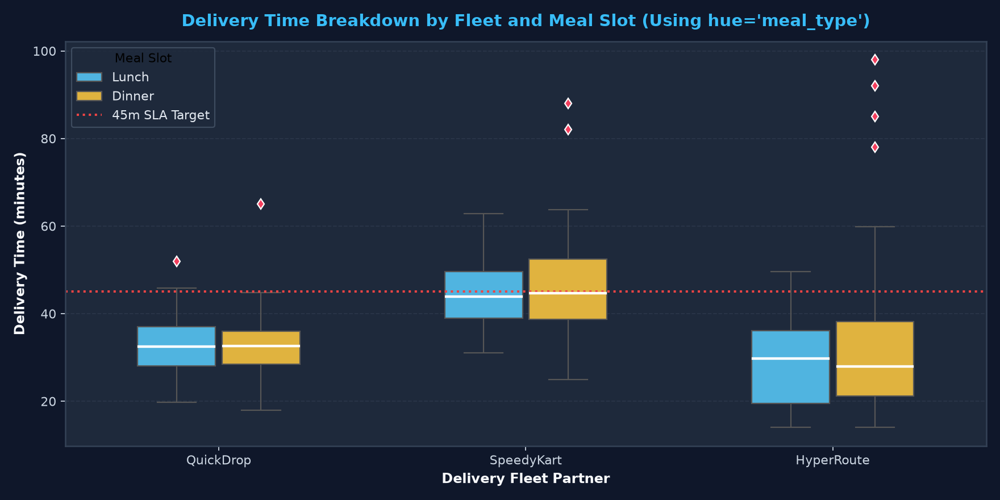
hue='meal_type' with gap=0.08.showfliers MechanicsMachine Learning and Data Cleaning workflows mein box plots outlier detection ke liye sabse pehla exploratory tool hote hain. Lekin outliers ko visually kaise style karein, aur kab unhe hide karein?
flierpropsBy default, Seaborn outliers ko chhote black circles ke roop mein render karta hai jo dark theme ya dense charts par easily miss ho sakte hain. flierprops dictionary use karke hum unhe prominent highlight kar sakte hain:
flier_styling = {
'marker': 'D', # Diamond marker
'markerfacecolor': '#f43f5e', # Bright crimson red
'markeredgecolor': '#fecdd3', # Soft pink stroke
'markersize': 8, # High visibility
'markeredgewidth': 1.5
}
fig, ax = plt.subplots(figsize=(9, 5.5))
sns.boxplot(data=df_college, x='section', y='exam_marks', ax=ax,
palette=['#0284c7', '#6366f1', '#10b981'],
flierprops=flier_styling, width=0.45)
ax.set_title("Custom Outlier Styling via flierprops (Prominent Red Diamonds)")
plt.tight_layout()
plt.show()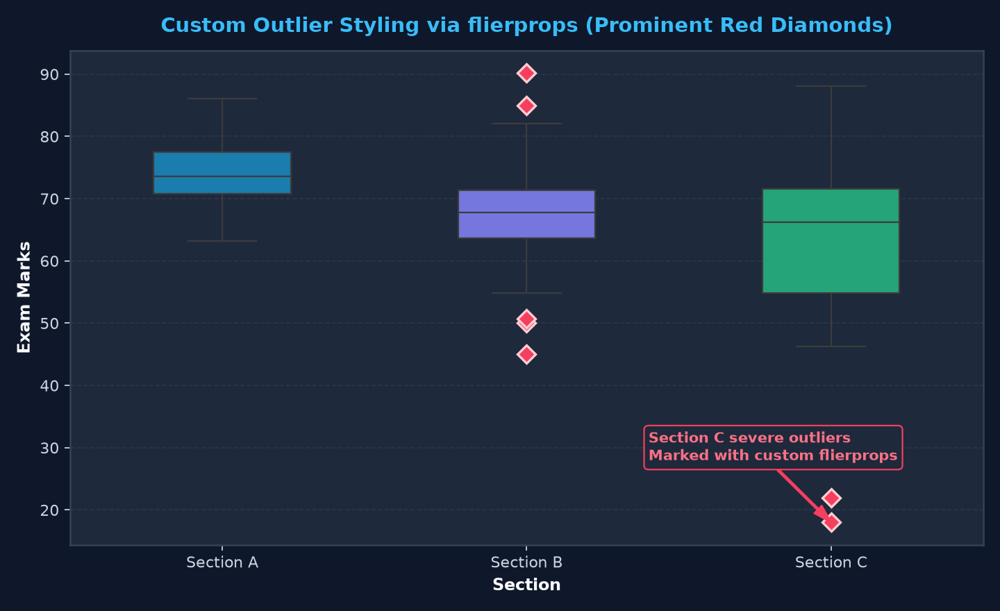
flierprops.showfliers=False Option: Truth vs MisunderstandingAgar aapko executive presentation ke liye clean chart banana hai jisme extreme outlier dots se chart ka scale distort na ho, toh aap showfliers=False use kar sakte hain.
Absolutely NOT! Yeh bahut common misconception hai. Setting showfliers=False does NOT filter or remove rows from your DataFrame! Whisker lengths, median lines, aur quartile box boundaries 100% same rehte hain. Sirf un isolated dots ka visual rendering suppress hota hai.
fig, (ax1, ax2) = plt.subplots(1, 2, figsize=(13, 5.5))
# showfliers=True (default)
sns.boxplot(data=df_deliv, x='partner', y='delivery_time_mins', ax=ax1,
palette='Blues_d', showfliers=True)
ax1.set_title("showfliers=True (Default)")
# showfliers=False (clean presentation)
sns.boxplot(data=df_deliv, x='partner', y='delivery_time_mins', ax=ax2,
palette='Blues_d', showfliers=False)
ax2.set_title("showfliers=False (Outliers Hidden, Geometry Intact)")
plt.tight_layout()
plt.show()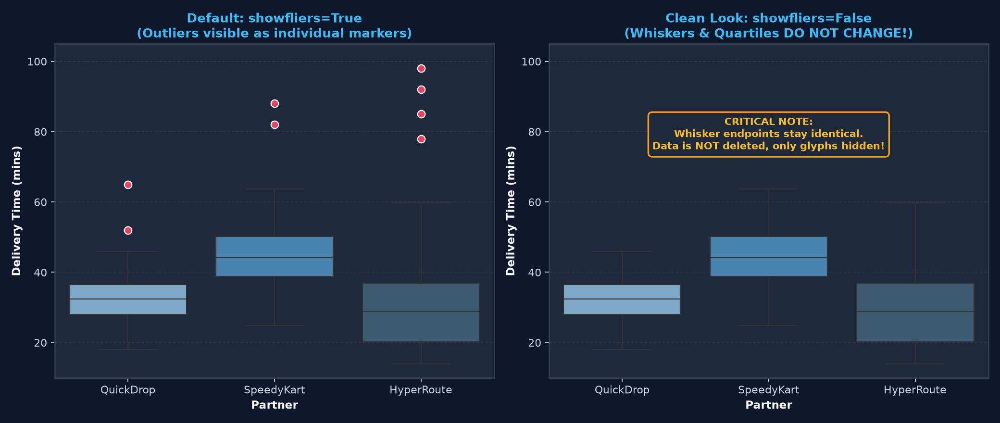
showfliers=False hides flier markers while leaving whisker endpoints and quartile boundaries completely untouched.whis=1.5 vs 3.0 vs PercentilesBy default, sns.boxplot() John Tukey ke 1.5×IQR rule ko follow karta hai. Lekin kya aap jante hain ki whis parameter ko aap customize kar sakte hain different analytical use-cases ke liye?
whiswhis=1.5): Fences = [Q1 − 1.5×IQR, Q3 + 1.5×IQR]. Flags mild and extreme outliers. Standard exploratory analysis ke liye ideal.whis=3.0): Fences = [Q1 − 3.0×IQR, Q3 + 3.0×IQR]. Tukey ne ise "Far Outliers" ya "Extreme Outliers" kaha tha. Yeh setting normal variance ko ignore karke sirf severe anomalies ko isolate karti hai.whis=(5, 95)): Whiskers ko IQR fences ke bajaye direct 5th percentile aur 95th percentile par terminate karta hai. Financial risk modeling aur SLA tail analysis mein yeh standard technique hai.sec_b = df_college[df_college['section'] == 'Section B']['exam_marks']
fig, (ax1, ax2, ax3) = plt.subplots(1, 3, figsize=(15, 5))
# Mode 1: whis=1.5
sns.boxplot(y=sec_b, ax=ax1, color='#0284c7', whis=1.5)
ax1.set_title("whis=1.5 (Standard: 5 outliers flagged)")
# Mode 2: whis=3.0
sns.boxplot(y=sec_b, ax=ax2, color='#6366f1', whis=3.0)
ax2.set_title("whis=3.0 (Conservative: Far Outliers only)")
# Mode 3: whis=(5, 95)
sns.boxplot(y=sec_b, ax=ax3, color='#10b981', whis=(5, 95))
ax3.set_title("whis=(5, 95) (Percentile Reach: 5% to 95%)")
plt.tight_layout()
plt.show()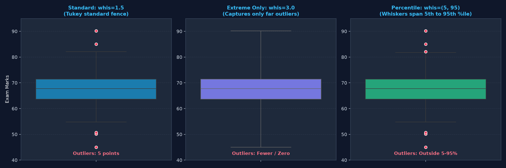
(5, 95).Box plots ki sabse badi weakness yeh hoti hai ki woh Sample Size (N) aur Data Point Density ko chupate hain. Chahe aapke group mein sirf 5 data points hon ya 5,000 data points hon, box plot dekhne mein bilkul ek jaisa lagta hai!
Agar Section A mein 100 students hain aur Section B mein sirf 4 students hain, toh bina raw points dekhe aap dono ke boxes ko compare karke galat statistical conclusions nikaal sakte hain. 4 points ka box statistical fluke ho sakta hai!
sns.stripplot()Professional data scientists box plot ke upar ek jittered sns.stripplot() overlay karte hain with transparency (alpha=0.6). Is combination ko bolte hain "The Best of Both Worlds" — summary quantiles bhi mil jaate hain aur underlying raw data density bhi transparently visible hoti hai!
import matplotlib.pyplot as plt
import seaborn as sns
import pandas as pd
df_college = pd.read_csv("scratch/seaborn_topic7_data/college_exam_scores.csv")
fig, ax = plt.subplots(figsize=(10, 5.5))
# Step 1: Draw clean base box plot with showfliers=False
# (Crucial: Hide fliers to avoid plotting outlier dots twice!)
sns.boxplot(data=df_college, x='section', y='exam_marks', ax=ax,
palette=['#1e293b', '#1e293b', '#1e293b'],
boxprops=dict(edgecolor='#94a3b8', linewidth=1.5),
medianprops=dict(color='#38bdf8', linewidth=2.5),
showfliers=False)
# Step 2: Overlay jittered points with high transparency
sns.stripplot(data=df_college, x='section', y='exam_marks', ax=ax,
palette=['#34d399', '#38bdf8', '#fbbf24'],
jitter=0.25, size=6, alpha=0.65, edgecolor='#0f172a', linewidth=0.5)
ax.set_title("The Best of Both Worlds: Box Plot Overlaid with Strip Plot")
ax.set_xlabel("Academic Section")
ax.set_ylabel("Exam Marks")
plt.tight_layout()
plt.show()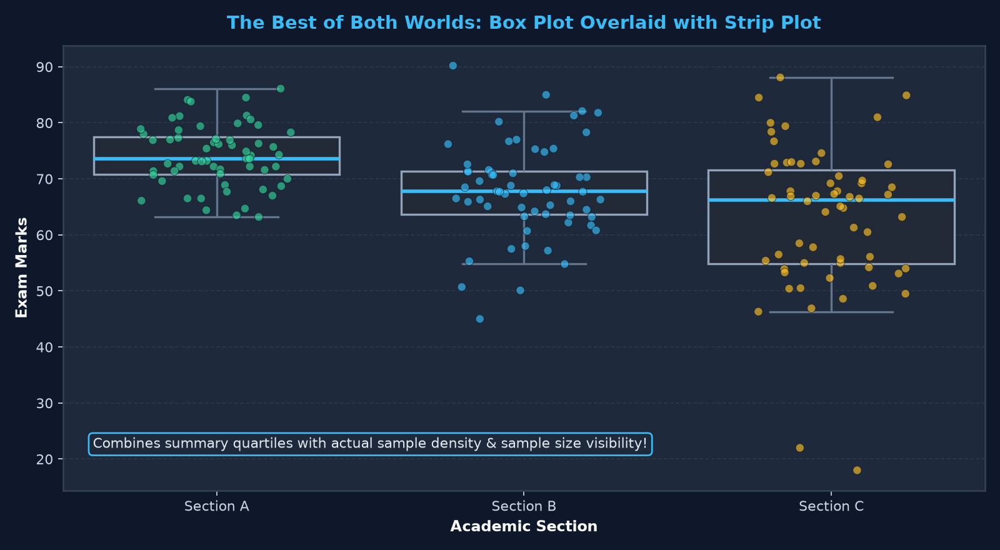
Histograms aur Box Plots dono continuous variables ke distributions study karne ke liye use hote hain. Lekin unka primary purpose alag hota hai, aur box plot ki ek bohot dangerous limitation hoti hai jise har data analyst ko jaan lena chahiye.
Box plots multimodality ko completely chupate hain! Agar aapke data mein do alag-alag groups hain (e.g. customer groups jinka peak 30 aur 70 par hai), toh histogram do distinct pahad (peaks) dikhayega. Lekin box plot median ko theek unke beech ke khali gaddhe (50) par rakh dega, aur box ko chouda bana dega — giving you ZERO indication that there are two separate clusters!
import numpy as np
import matplotlib.pyplot as plt
import seaborn as sns
np.random.seed(42)
bimodal_data = np.concatenate([np.random.normal(30, 5, 200), np.random.normal(70, 5, 200)])
fig, (ax1, ax2) = plt.subplots(1, 2, figsize=(13, 5.5))
# 1. Histogram + KDE
sns.histplot(bimodal_data, kde=True, ax=ax1, color='#38bdf8', bins=25)
ax1.set_title("Histogram + KDE: Clearly Reveals Two Peaks!")
# 2. Box Plot
sns.boxplot(x=bimodal_data, ax=ax2, color='#f59e0b')
ax2.set_title("Box Plot: Completely Blinds You to Bimodality!")
plt.tight_layout()
plt.show()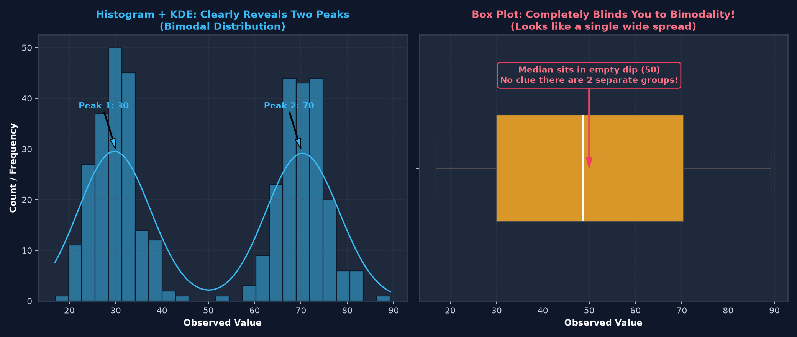
| Feature / Requirement | Histogram (sns.histplot) |
Box Plot (sns.boxplot) |
|---|---|---|
| Comparing 10+ Groups | Cluttered & messy (overlapping bars). | Winner! Clean, compact side-by-side boxes. |
| Revealing Multimodal Peaks | Winner! Peaks and valleys are obvious. | Fails completely (hides dips and peaks). |
| Exact Five-Number Summary | Hard to read exact median and quartiles. | Winner! Exact median and IQR lines drawn. |
| Outlier Flagging via Fences | Visual tail only; no exact mathematical fences. | Winner! Explicit Tukey 1.5×IQR outlier markers. |
Topic 5 mein humne Kernel Density Estimation (KDE) plots padhe the. KDE curve data ki smooth continuous probability density show karta hai, jabki Box Plot discrete summary quantiles draw karta hai.
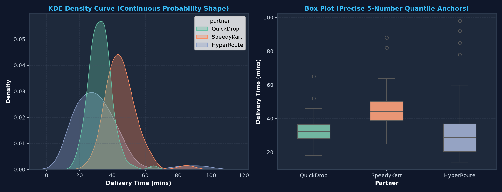
Agar aapko Box Plot ka compact summary bhi chahiye aur Histogram/KDE ki peak-detection capability bhi chahiye, toh Seaborn ka sns.violinplot() perfect solution hai. Violin plot box plot aur mirrored KDE curve ka hybrid combination hota hai!
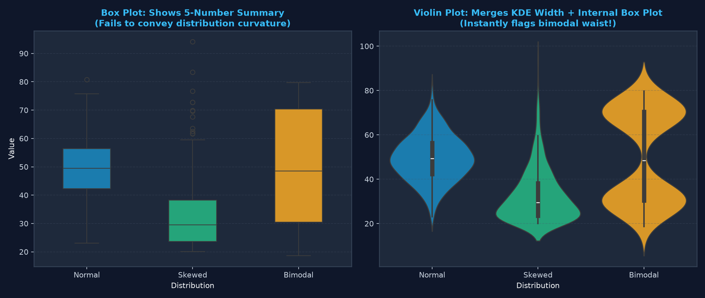
Choose Violin Plot if:
Stick to Box Plot if:
Production dashboards aur research reports ke liye raw Seaborn charts kafi nahi hote. Chart ko clear titles, readable ticks, desaturated gridlines, aur proper figure margins ke saath polish karna zaroori hai.
sns.set_theme(style='darkgrid', palette='deep') ya custom Matplotlib rcParams.sns.despine(top=True, right=True)) taaki chart clean lage.₹{x:,.0f}) apply karein.ax.axhline() ya ax.axvline() ke zariye dashed lines se mark karein.Ek leading tech consultancy apne HR compensation structure ko audit kar rahi hai across 3 core data roles: Junior Data Analyst, Senior Data Scientist, aur ML Engineering Lead. Company dekhna chahti hai ki compensation spread kaisa hai aur kya koi unexplainable pay disparity ya executive bonus outliers exist karte hain.
import matplotlib.pyplot as plt
import seaborn as sns
import pandas as pd
df_salary = pd.read_csv("scratch/seaborn_topic7_data/tech_salaries_demo.csv")
role_order = ['Junior Data Analyst', 'Senior Data Scientist', 'ML Engineering Lead']
sal_pal = {'Junior Data Analyst': '#38bdf8', 'Senior Data Scientist': '#818cf8', 'ML Engineering Lead': '#f43f5e'}
fig, ax = plt.subplots(figsize=(11, 6))
sns.boxplot(data=df_salary, x='role', y='monthly_salary_inr', order=role_order, palette=sal_pal,
ax=ax, width=0.45, medianprops=dict(color='#ffffff', linewidth=2.5),
flierprops=dict(marker='D', markerfacecolor='#facc15', markeredgecolor='#ffffff', markersize=8))
ax.set_title("Tech Salary Spread by Seniority Tier (Variance Expands with Seniority)")
ax.set_ylabel("Monthly Compensation (₹ INR)")
ax.set_xlabel("Job Title / Seniority")
ax.yaxis.set_major_formatter('₹{x:,.0f}')
plt.tight_layout()
plt.show()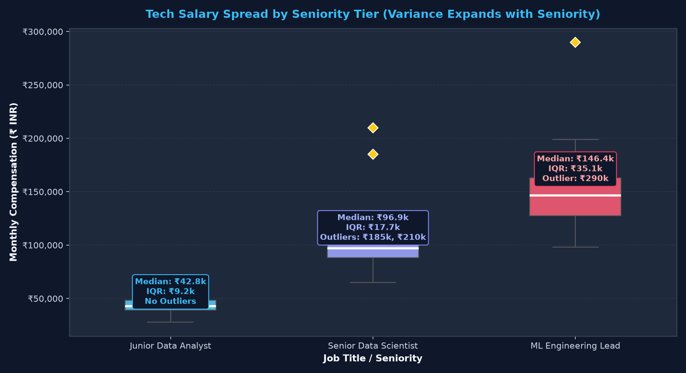
| Role / Seniority Tier | Median Salary | IQR Spread | Lower Whisker | Upper Whisker | Flier Outliers | Business Analysis |
|---|---|---|---|---|---|---|
| Junior Data Analyst | ₹42,800 | ₹9,225 | ₹28,000 | ₹58,400 | None | Standardized entry-level band; tight compensation control. |
| Senior Data Scientist | ₹96,900 | ₹17,725 | ₹65,000 | ₹129,100 | ₹185,000, ₹210,000 |
Two high outliers represent specialized domain niches (GenAI/Quant). |
| ML Engineering Lead | ₹146,400 | ₹35,050 | ₹98,000 | ₹198,800 | ₹290,000 |
Widest spread (IQR=₹35k); massive executive signing bonus outlier. |
Ek IoT automotive platform connected cars se telemetry data collect karta hai. Architecture team ne 3 network pipelines test kiye: Edge Gateway A (Local LAN), Edge Gateway B (Cellular 4G/5G), aur Cloud Monolith API. Objective yeh tha ki p50 median aur p99 tail latency ko 50ms aur 100ms SLAs ke against evaluate kiya jaye.
import matplotlib.pyplot as plt
import seaborn as sns
import pandas as pd
df_lat = pd.read_csv("scratch/seaborn_topic7_data/iot_api_latency.csv")
order = ['Edge Gateway A (LAN)', 'Edge Gateway B (Cellular)', 'Cloud Monolith API']
fig, ax = plt.subplots(figsize=(11, 6))
sns.boxplot(data=df_lat, x='architecture', y='latency_ms', order=order,
palette=['#10b981', '#f59e0b', '#f43f5e'], ax=ax, width=0.45,
medianprops=dict(color='#ffffff', linewidth=2.5),
flierprops=dict(marker='o', markerfacecolor='#ffffff', markeredgecolor='#f43f5e', markersize=6))
ax.axhline(50, color='#38bdf8', linestyle='--', linewidth=1.8, label='Optimal Target (50 ms)')
ax.axhline(100, color='#ef4444', linestyle=':', linewidth=1.8, label='Max Critical SLA (100 ms)')
ax.set_title("IoT Cloud & Edge API Latency Benchmark")
ax.set_ylabel("Roundtrip Latency (ms)")
ax.legend()
plt.tight_layout()
plt.show()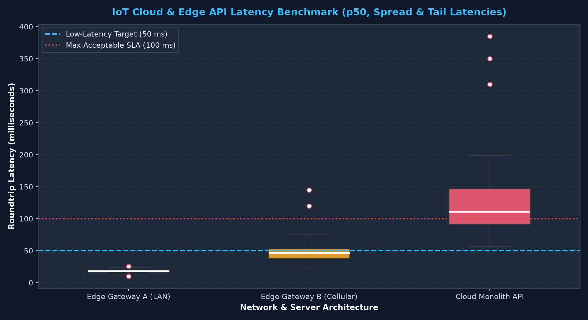
Cloud Monolith ka median (111.15ms) hi critical 100ms SLA ke upar baitha hai, aur upper whisker 198.4ms tak jaata hai with severe tail outliers up to 385ms! Safety-critical automotive decisions ke liye LAN Edge Gateway (median 17.9ms, max whisker 23.5ms) deploy karna mandatory hai.
Manufacturing plant mein 4 high-speed CNC machines ke core temperatures monitor kiye jaa rahe hain. Safe operating band 65°C to 75°C hai. 80°C par Warning alert hai, aur 90°C par Emergency Shutdown hai.
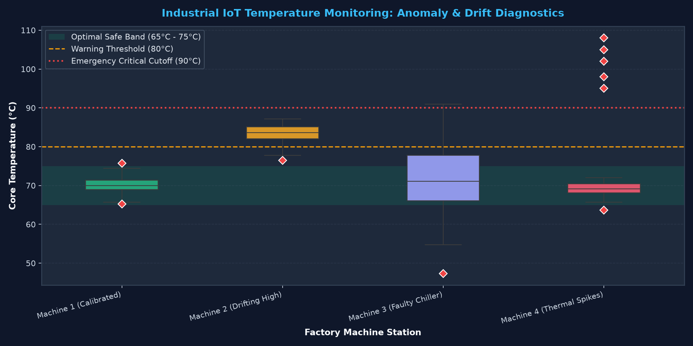
Box plots generate karte waqt data analysts aksar chhoti-chhoti mistakes karte hain jo either code ko crash kar deti hain ya statistical interpretations ko completely invert kar deti hain. Yahan 12 most critical pitfalls ka complete field guide diya gaya hai:
| # | Pitfall & Silent Bug Scenario | Danger / Incorrect Interpretation | The Correct Code & Mental Fix |
|---|---|---|---|
| 1 | Believing Whiskers Reach Theoretical Fences | Reporting that whiskers extend to Q3 + 1.5×IQR even when no data exists there. | Whiskers stop at the most extreme observed data point inside fences. Do not assume fence equals whisker. |
| 2 | Thinking showfliers=False Cleans Data |
Believing that setting showfliers=False drops outliers from analysis or models. |
showfliers=False is purely cosmetic; DataFrame rows remain untouched. Filter rows with pandas if needed. |
| 3 | Double-Plotting Outliers with Stripplot Overlay | Overlaying sns.stripplot() over default boxplot plots outlier dots twice! |
Always pass showfliers=False to sns.boxplot() when overlaying stripplot or swarmplot. |
| 4 | Missing Bimodal Distributions (The Twin Peaks Trap) | Conflating a bimodal distribution with a wide unimodal spread. | Always pair box plots with sns.histplot(kde=True) or use sns.violinplot() to verify peak count. |
| 5 | Passing Numerical Column to x When Grouping by y |
Accidental vertical orientation with cramped unreadable labels. | For long categorical labels, always pass category column to y and continuous value to x. |
| 6 | Inverting order vs hue_order |
Visual chaos where sub-groups mismatch across legend entries. | Use order for primary axis categories and hue_order strictly for the hue variable. |
| 7 | Unformatted Large Numbers on Axes | Stakeholders struggle to read 1500000 vs 150000. |
Use Matplotlib ticker formatters: ax.yaxis.set_major_formatter('₹{x:,.0f}'). |
| 8 | Assuming Small Samples are Normally Distributed | Building box plots on N < 10 observations where quantiles are unstable. | If sample size is small (N < 20), overlay raw points (sns.stripplot) and report N explicitly. |
| 9 | Ignoring NaN / Missing Values | Pandas silently drops NaNs, which might distort category sample representation. | Check missing values count with df.isnull().sum() before drawing box plots. |
| 10 | Hardcoding Colors Without hue Assignment in Seaborn 0.13+ |
Getting FutureWarning: Passing palette without assigning hue is deprecated. |
Pass hue=category_col, legend=False when applying a custom categorical palette to single-variable plots. |
| 11 | Overlapping Hue Boxes Due to Missing Gap | Sub-group boxes touch each other and look cluttered. | Use Seaborn 0.13+ gap=0.08 or gap=0.1 for modern breathe-in spacing between hue clusters. |
| 12 | Truncating Outlier Tail with Inappropriate ylim |
Cropping the y-axis cuts off high outliers, giving a false sense of safety. | Always set ylim generously beyond the maximum outlier or use ax.autoscale(). |
Yeh master reference table aapke daily work aur coding interviews ke liye ek instant copy-paste companion hai:
| Analytical Goal | Seaborn 0.13+ Code Snippet |
|---|---|
| Standard Vertical Boxplot | sns.boxplot(data=df, x='category', y='value', palette='Set2') |
| Horizontal Boxplot (Long Labels) | sns.boxplot(data=df, y='category', x='value', palette='deep') |
| Two-Factor Dodged Hue Plot | sns.boxplot(data=df, x='dept', y='salary', hue='gender', gap=0.1) |
| Custom Diamond Outlier Styling | sns.boxplot(..., flierprops=dict(marker='D', markerfacecolor='red', markersize=7)) |
| Clean Presentation (Hide Outlier Dots) | sns.boxplot(..., showfliers=False) |
| Extreme Outliers Only (3.0×IQR) | sns.boxplot(..., whis=3.0) |
| Percentile Whiskers (5th to 95th) | sns.boxplot(..., whis=(5, 95)) |
| Box + Strip Plot Overlay | sns.boxplot(..., showfliers=False); sns.stripplot(..., alpha=0.6, jitter=0.2) |
| Show Mean Point Inside Box | sns.boxplot(..., showmeans=True, meanprops=dict(marker='^', markerfacecolor='green')) |
| Rank Categories by Median | order = df.groupby('cat')['val'].median().sort_values().index; sns.boxplot(..., order=order) |
Apni understanding ko test karne ke liye niche diye gaye 21 curated questions solve kijiye. Har question mein real-world industry logic aur step-by-step verified explanations included hain.
Answer: Minimum, First Quartile (Q1 / 25th percentile), Median (Q2 / 50th percentile), Third Quartile (Q3 / 75th percentile), and Maximum (ya whisker upper boundary).
Answer:
[10, 20, 30] → Q1 = 20.[50, 60, 70] → Q3 = 60.Answer:
Answer: Nahi! Whisker theoretical fence tak tabhi draw hota hai jab exact fence value par koi data point exist karta ho. Otherwise, whisker fence ke andar ke sabse extreme actual observed data point par aakar ruk jaata hai.
showfliers=False pass karne par DataFrame ki rows delete hoti hain ya nahi?Answer: Bilkul nahi. showfliers=False sirf Matplotlib canvas par outlier dots ki visual visibility ko hide karta hai. Data frame ki koi row remove nahi hoti aur whisker boundaries 100% same rehti hain.
Answer: Categorical column ko y variable par aur numerical column ko x variable par pass karke: sns.boxplot(data=df, y='job_title', x='monthly_salary').
sns.stripplot overlay karte waqt kaunsi critical mistake avoid karni chahiye?Answer: Agar aap sns.boxplot mein showfliers=False set nahi karenge, toh box plot ke flier dots aur strip plot ke raw dots dono ek ke upar ek draw honge (double plotting), jisse points artificially dense aur darker dikhenge!
Answer: Bimodal aur Multimodal distributions. Box plot do alag-alag peaks ko ek wide continuous spread ki tarah summarize kar deta hai aur median ko dono peaks ke beech ke khali dip mein place kar deta hai.
whis=3.0 set karne par box plot kaisa behave karta hai?Answer: Whisker reach 3.0×IQR tak extend ho jaati hai. Isse normal variance ke mild outliers flag nahi hote; sirf Extreme / Far Outliers hi visual dots ke roop mein appear hote hain.
gap parameter ka kya role hota hai?Answer: Jab hue variable use karke dodged sub-groups draw kiye jaate hain, toh gap=0.1 parameter adjacent hue boxes ke beech clean visual space add karta hai taaki bars aapas mein chipke na rahein.
Answer: flierprops=dict(marker='D', markerfacecolor='#f43f5e', markeredgecolor='#ffffff', markersize=8).
Answer: Right-Skewed (Positively Skewed) distribution. Data mein high values ki taraf lambi tail exist karti hai.
Answer: Left-Skewed (Negatively Skewed) distribution. Majority values high hain, aur low values ki taraf lambi tail hai.
Answer: Groupby karke medians sort karein aur order pass karein:
sorted_order = df.groupby('category')['value'].median().sort_values().index
sns.boxplot(data=df, x='category', y='value', order=sorted_order)Answer: showmeans=True pass karein aur meanprops=dict(marker='^', markerfacecolor='green', markersize=8) ke zariye marker style customize karein.
Answer: whis=(5, 95) ya whis=(1, 99) tuple pass karke.
Answer: Kyunki unka breakdown point 50% hota hai. Ek single massive outlier mean ko infinitely pull kar sakta hai, lekin median aur middle 50% IQR par single extreme value ka koi farak nahi padta.
Answer: Seaborn 0.13+ enforce karta hai ki agar palette use ho toh hue defined hona chahiye. Clean fix: hue='category_col', legend=False pass karein.
Answer: Jab dataset bada ho (N > 100) aur suspect ho ki distribution bimodal ya complex multi-peaked ho sakta hai.
Answer: width=0.45 (default is 0.8).
Industry Pipeline Implementation: Yeh automated function kisi bhi DataFrame column ka 5-number summary calculate karta hai, outliers extract karta hai, aur polished boxplot generate karta hai:
import numpy as np
import pandas as pd
import seaborn as sns
import matplotlib.pyplot as plt
def audit_column_distribution(df, col_name, category_col=None):
# Five-number summary calculations
q1 = df[col_name].quantile(0.25)
med = df[col_name].median()
q3 = df[col_name].quantile(0.75)
iqr = q3 - q1
lf = q1 - 1.5 * iqr
uf = q3 + 1.5 * iqr
outliers = df[(df[col_name] < lf) | (df[col_name] > uf)][col_name]
print(f"=== DISTRIBUTION AUDIT: {col_name} ===")
print(f"Q1: {q1:.2f} | Median: {med:.2f} | Q3: {q3:.2f} | IQR: {iqr:.2f}")
print(f"Fences: [{lf:.2f}, {uf:.2f}]")
print(f"Outlier Count: {len(outliers)} ({len(outliers)/len(df)*100:.1f}%)")
fig, ax = plt.subplots(figsize=(8, 5))
if category_col:
sns.boxplot(data=df, x=category_col, y=col_name, ax=ax, palette='Set2')
else:
sns.boxplot(y=df[col_name], ax=ax, color='#0284c7', width=0.4)
ax.set_title(f"Box Plot Audit: {col_name}")
plt.tight_layout()
return figBadhaai ho! Aapne Seaborn Topic 7 mein Box Plots ki core theory, John Tukey's 1.5×IQR fences, multi-category segmentation, outlier styling, whisker reach rules, aur strip plot overlays ko complete depth ke saath master kar liya hai.
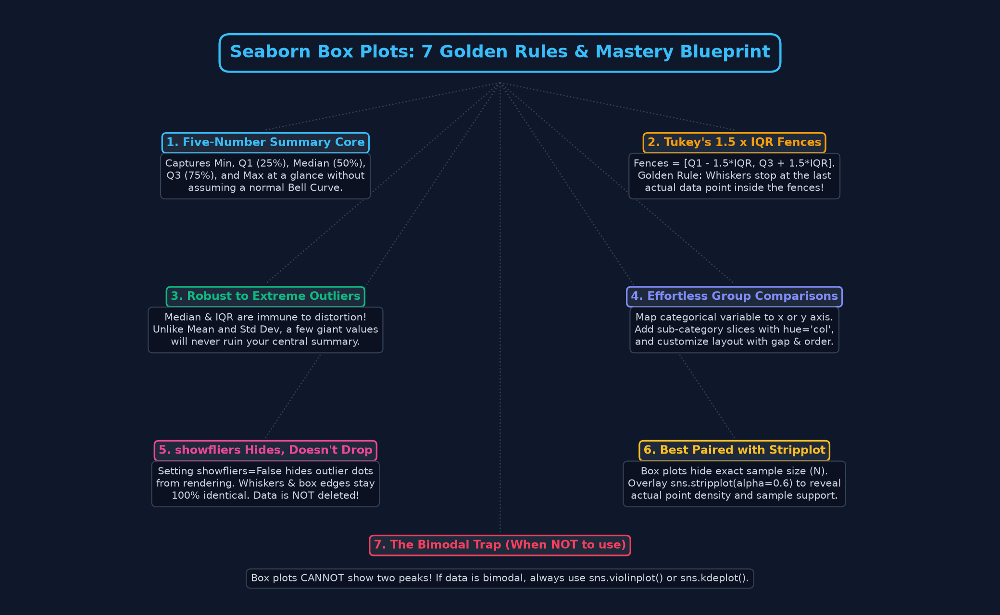
sns.stripplot(alpha=0.6) overlay karna data science ka gold standard hai.Agli class mein hum explore karenge Violin Plots (sns.violinplot)! Hum dekhenge ki kaise Violin plots Box Plots ke 5-number quantiles aur KDE density curves ko merge karke multimodality, bimodal peaks, aur cluster density ko seamlessly reveal karte hain.